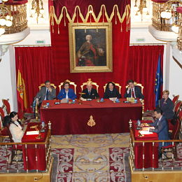

Conferencias
Universidad Autónoma de Madrid. 11.04.2013
Ponente en la Mesa redonda titulada “Reformas en la Justicia Española” organizada por la ROED con la colaboración de la Asociación Res Pública en la Facultad de Derecho de la Universidad Autónoma de Madrid
Universidad Autónoma de Madrid. 11.07.2012
“Honorarios, costas y costes en los procedimientos tributarios de revisión”, en el Curso de Verano “Conflictos y litigios en materia tributaria"
Real Academia de Jurisprudencia y Legislación. 18.04.2012
“Defectos endémicos del proceso español”, en las Jornadas “Sobre la reforma procesal en curso: lo jurisdiccional y lo administrativo”
Ateneo Jovellanos de Gijón. 23.03.2012
“El asesinato de Melquíades Alvarez, víctima de tiranías” en el ciclo “Melquíades Alvarez en el 75º aniversario de su muerte
Real Academia de Jurisprudencia y Legislación. 25.05.2011
“La antítesis del tiranicidio: el asesinato de Melquíades Alvarez”, en las Jornadas “Sobre la tiranía y los tiranicidas”
Ilustre Colegio de Procuradores de Madrid. 25.06.2010 y 25.02.2011
“Práctica de los actos de comunicación realizados por los Procuradores: Análisis de los requisitos”
Real Academia de Jurisprudencia y Legislación. 26.05.2010
“Agilización y eficacia de los procesos: nuevas funciones asumidas por los Procuradores y reformas propuestas y aprobadas por las Cortes”, en las Jornadas sobre “Temas de la nueva Ley de Reforma de la Legislación Procesal para la implantación de la nueva oficina judicial”
Real Academia de Jurisprudencia y Legislación. 28.05.2008
“Proceso jurisdiccional y proceso ante el Huissier”, en las Jornadas sobre “El Secretario Judicial y los Jueces y Magistrados en el proyecto de Ley de Reforma Procesal para la implantación de la oficina judicial”
Real Academia de Jurisprudencia y Legislación. 27.05.2008
“Antecedentes históricos directos del texto del artículo 125 de la Constitución de 1978, que recoge la acción popular”, en las Jornadas sobre “La acción popular en el ordenamiento español actual”
Ilustre Colegio de Procuradores de Madrid. 11.12.2008
“Monitorio Europeo y Reglamentos Procesales de la Unión Europea”